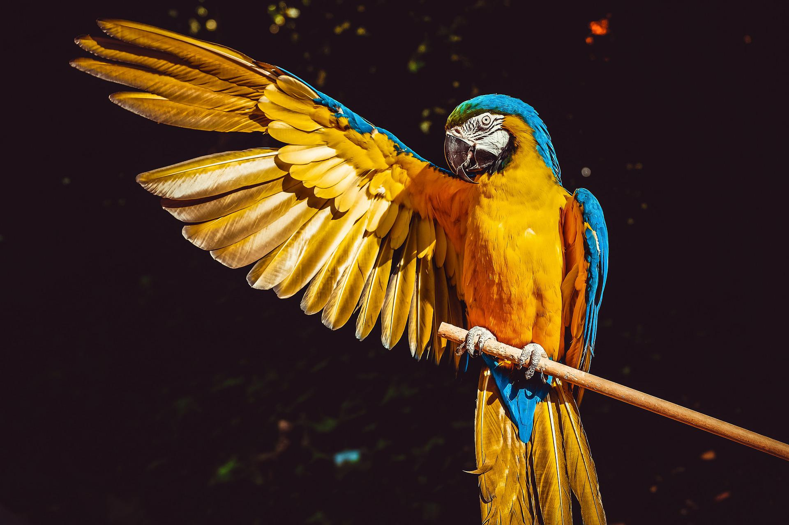
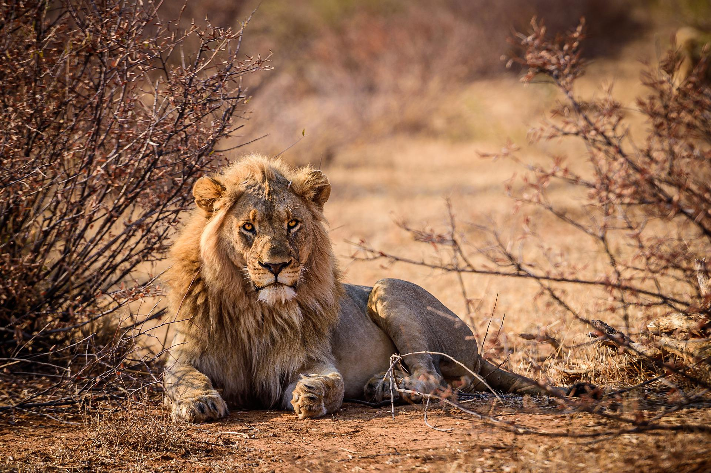

Our world needs animals. Animals maintain the environment, keeping it balanced. They provide nutrients to ecosystems which are vital to plants. Many animals have become endangered or extinct. If animals go extinct, all humans would go extinct too, due to our reliance on animals. Poaching and habitat loss are two of the main causes in animal endangerment. Poaching and habitat loss are leading causes in the extinction and endangerment of species.
